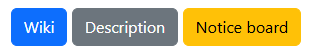

Here I will show you code snippets and what they do. The development of the website began with something I liked when I was making my first website (this is already my third) using video tutorials.

Here you can see a round frame with shadows. It was surprisingly easy to make. On the right is a snippet of code that made it possible. It was all done thanks to the connected Bootstrap library. I wrote most of the code myself, but since it was linked to the library, it was easier to do. But my advice is that it's better to do it yourself.

These are hyperlinks that allow you to navigate to a website when clicked. Their design also depends on the connected Bootstrap library. Writing a working button is very, very easy, so you can make the entire website out of hyperlinks :)